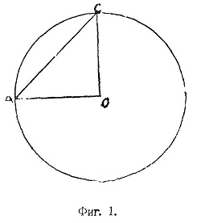

Беседа 1745 от 3877 · Беинса Дуно
Бавни и бързи движения
Размишление.
Един основен и важен въпрос в живота е дишането. Тоя въпрос има отношение към дробовете. Човек диша и чрез кожата си. Седем милиона пори взимат участие в дишането. Ако се запушат порите на кожата, човек веднага умира. Специфичното дишане чрез дробовете не може да го спаси. Ако се отворят порите, а престане специфичното дишане, човек пак умира. Значи, специфичното дишане и дишането чрез порите трябва да бъдат в хармония. Ако не диша едновременно чрез дробовете и чрез кожата си, човек е осъден на различни болести. Природата изисква от човека да приема дажбата, която му се дава, и да я обработва правилно. Ако дажбата е въздух, човек трябва да приеме определеното количество и да го обработи на време. Ако не го обработите, както трябва, природата пише в книжката на живота ви, че не сте изпълнили задължението си. Тя ви праща различни болести и намалява заплатата, която ви е определена. Питаш: Защо боледувам? – Защото не си обработил въздуха, който природата ти е определила. Да обработиш въздуха, това значи, да извадиш от него тази енергия, която е нужна и за тебе, и за природата. Всички съзнания са свързани в едно цяло, както клетките в един организъм. Следователно, работата, която всеки човек извършва, влиза в обща употреба на цялото. Ако нямате това разбиране и мислите, че сте независими, че нямате нищо общо с цялото, вие се заблуждавате. От ваше гледище, може да не сте полезни на природата, но, от нейно гледище, не е така. От ваше гледище, може да сте малки, но природата гледа другояче на вас. Вие трябва да знаете, де сте полезни и де не сте полезни. Малки са стрелките на часовника, но са полезни дотолкова, доколкото показват времето. Стрелките на часовника са свързани с общия механизъм. Значи, и те, колкото и да са малки, имат отношение към цялото. Какво ще стане с часовника, ако колелцата, пружината и стрелките му престанат да извършват своята служба? – Часовникът ще спре.
Сега и вие, като малките деца, трябва да изучавате елементарни работи, докато се научите да изпълнявате известна служба. Например, вие още не знаете да дишате правилно. Вие дишате само с върха на дробовете си. Като дишате, ще държите главата си изправена, точно перпендикулярно на земята. Ще теглите една права линия от центъра на земята до центъра на слънцето и ще застанете в това положение. Понеже не сте господари на себе си, може да стане едно малко отклоняване. Вие сте млади, изправени и се питате, защо старият човек върви прегърбен. – Той се е отклонил от перпендикуляра, направил е известно нарушение. – Кога се наклонява перпендикулярът? – Когато върху него се тури някаква тежест. Не туряйте на перпендикуляра никаква тежест, която може да го наведе на една, или на друга страна. Перпендикулярът трябва да бъде абсолютно без тежест. Той е права линия, в която всички сили се уравновесяват. Щом перпендикулярът уравновесява силите, човек мисли право. Неговият гръбнак е успореден на перпендикуляра. Всяка права, която не е успоредна на гръбначния стълб, не е перпендикуляр, И обратно: ако гръбнакът не е успореден на перпендикуляра, той не е прав, има нещо изкривено в него. Тогава нито перпендикулярът е мярка за определяне посоката на плоскостта, нито гръбнакът. За да бъде една права перпендикулярна на дадена плоскост, това зависи от будността на човешкото съзнание. Ако в твоя умствен или духовен свят стане известно нарушаване, ти губиш будността на съзнанието си, губиш своя перпендикуляр в живота и влизаш в бурното море. И часовникът има свой перпендикуляр. Точката, която не се движи, е свързана с перпендикуляра, т. е. с махалото, което е в постоянно движение.
Законът за перпендикуляра е физически закон, но вие трябва да го пренесете и в духовния свят. Там този закон гласи: Двама души могат да бъдат в хармония само тогава, когато перпендикулярите им са успоредни. Не са ли успоредни, и те не са в хармония. Ако единият е гърбав, а другият – изправен, те никога няма да бъдат в съгласие. Какво трябва да направят, за да се хармонизират?
Питам: Ако един господар отива да търси работници, какви ще вземе? – Здрави, способни за работа. Може да пазари и един гърбав, но малко ще разчита на него. Като види здравия работник, той ще го потупа по гърба, ще му се зарадва. – Кой човек е гърбав? – Гърбав е този, който не мисли право. Гърбав е този, който не чувства право. Гърбав е този, който не постъпва право. Аз говоря за онази гърбавина, която няма никакъв център, а не за гърбавината на окръжността. Тя е кривина, а не гърбавина. Окръжността е съставена от безброй прави линии. – Защо? – Защото между две точки може да се прекара само една права. Понеже окръжността е съставена от много точки, те са свързани само с прави линии. По отношение на главния център, тия точки са полюси. В окръжността могат да се прекарат безброй радиуси, които, свързани с една хорда, образуват по-големи или по-малки триъгълници. Всички радиуси на една и съща окръжност са равни.

Какво ще кажете за едно колело, което заема голямо пространство? Силно ли е то? Колкото голяма окръжност да опише около себе си, това не показва, че кръгът, на който сме стъпили, е много силен. Силата е в центъра,който описва окръжността, а не в самия кръг. Често и вие, без да разсъждавате, казвате: Ние сме големи хора. – Вашата големина нищо не значи. Ти може да имаш голяма глава, голямо тяло, големи ръце и крака, но това са само възможности. Ти може да бъдеш силен и голям дотолкова, доколкото си господар на тялото си, доколкото можеш да работиш с мозъка си, с ръцете и краката си. Ако един ден твоята ръка се откаже да ти служи, коя е причината за това? – Причината е, че ти не си господар на ръката си. Ти работиш повече, отколкото трябва, осакатяваш ръката си, правиш престъпление спрямо живите сили на природата. Някога не работиш нищо, и пак ръката ти се отказва да работи. Тя иска да каже, че не трябва да бездействаш. – Коя е мярката, с която се определя, колко трябва да работи човек? – Това се познава по приятността, с която работиш. Работи, докато ти е приятно. Като работиш така, ти си в съгласие със законите на природата. Почувстваш ли най-малкото неразположение в работата си, спри, не продължавай повече. Същият закон се отнася и до яденето. Като ядеш и дойдеш до най-сладката хапка, престани да ядеш. Като мине този момент, ти губиш разположението си, усещаш известна тежест в стомаха си. – Защо? – Преял си, т. е. работил си повече, отколкото трябва. Ако искаш да бъдеш здрав, не свършвай работата си докрай. Казваш: Трябва да свърша работата си докрай. – Не, във физическите работи трябва да остане поне малка част незавършена. Ако завършиш работите си, ти влизаш в дисхармония с общия план на природата. Първо, тя трябва да завърши работата си, после – ти своята работа. Ако завършиш работата си преди нея, ти не си в хармония, не вървиш в правия път.
Какво значи да свършиш една работа, преди определеното за нея време? Ако десет души се стремят към един общ център, и един от тях стигне по-рано, това показва ли, че той е свършил вече работата си докрай. Всички трябва да пристигнат на мястото в точно определен час, например, в 5 часа. Ако някой пристигне 10 минути по-рано, или по-късно, той не е изпълнил задачата си, както трябва. Един може да пристигне 10 секунди по-рано, друг – 15 секунди, това не е важно. Важно е, че ти си вече в дисхармония с природата. Вследствие на това, ти чувстваш вътрешно разногласие и в себе си. На какво се дължи това? – На бързината, с която си се хранил. Бързо си гълтал хапките. Знаеш ли, колко пъти трябва да обърнеш една хапка в устата си? Всяка храна, която не е прекарана през устата определено число пъти, не може да принесе никаква полза. Не мислете, че както и да се храните, ще имате полза от храната.
И тъй, при храненето се забелязват главно три процеса, които се извършват едновременно. Храната трябва да се дъвче дълго време, за да се използва енергията, която се съдържа в нея. Индусите я наричат прана или животворна сила, живо електричество или жив магнетизъм. Като дъвчете храната, животворната енергия минава през езика и се складира в нервната система. Колкото по-малко дъвчете храната, толкова по-малко енергия внасяте в нервната система. От устата храната минава в стомаха, дето се извършва друг процес. Колкото повече енергия иде от мозъка, толкова по-лесно се смила храната; ако мозъчната енергия е по-малко, храносмилането става по-бавно. Значи, бързината на храносмилането се определя от мозъчната енергия. Учените препоръчват да се дъвче храната дълго време, за да може да се възприеме повече мозъчна енергия. Така ще може да се използва и онази енергия, потребна за мускулите и костите. Ако умът ви не е съсредоточен към яденето, то е безполезно. В храненето човек трябва да бъде като търговец, който работи със златни пари, Като види златните монети, той изпитва приятност. Щом се прибере вкъщи, той преброява парите си и ги туря в касата. Ако търговецът работи съзнателно и с любов, той никога не боледува. Кой търговец боледува? – Който дава на кредит. Той дава стока на един, на друг и пише в тефтера си. Като се изредят няколко клиенти, търговецът преглежда сметките си и вижда, че няма пари в касата. Така, той се разболява от безпокойство. Значи, ял си на вересия, дъвкал си на вересия. И в края на краищата – заболяваш. Ти мислиш, разсъждаваш, но умът ти не присъства там.
Следователно, когато умът не присъства в храненето, това показва, че си дал стоката си на вересия. Ти се надяваш, че ще ти платят, но оставаш излъган и казваш: Втори път на вересия на давам! В природата няма отдел „за вересия“. Там всичко е в брой. – Скоро ще получа пари, почакай малко! – Щом нямаш пари, ще дадеш, колкото имаш. В гостилницата нищо не дават на вересия. Влезеш ли вътре, ще бръкнеш в джоба си, ще извадиш кесията си, за да разбереш, колко можеш да ядеш. Колкото имаш в кесията, с толкова можеш да разполагаш. Значи, ти ядеш правилно дотолкова, доколкото твоят ум присъства в първата хапка. Взимаш първата хапка, но виждаш, че яденето е поставено в голяма чиния. В случая, първата хапка е центърът, а другите хапки са точки на окръжността. Всяко ядене е реално дотолкова, доколкото влиза в устата. Докато не влезе в устата, яденето не е реално: или ще го ядеш, или няма да го ядеш.
Двама другари, англичани, влезли заедно в една гостилница да се нахранят. Поръчали си ядене и започнали да ядат. Единият от тях едва хапнал, прилошало му нещо и умрял. Другият, с характерното хладнокръвие на англичанина, спокойно се нахранил. След това извикал келнера да му плати. Последният направил сметка за двамата. Обаче, англичанинът казал: Ще платя само моето ядене и половината от яденето на другаря ми. Както виждаш, половината ядене остана.
Казвам: И вие не знаете, доде ще изядете яденето си, може да остане на половината, може още на първата лъжица да спрете. Важно е, колко сте изяли. Не гледай на чинията, но на изядените хапки. Радвай се на тях. Хапката, която си изял, струва хиляди пъти повече от пълните чинии ядене. Тя принася повече полза от яденето, което си приел в себе си, Този закон има приложение и в живота. Онова, което виждаш вън от себе си, това са пълните чинии с ядене. Онова, което чувстваш, това са хапките, които си изял. Човек се нуждае от права философия, да знае, какво му е нужно в даден момент. Той се нуждае от здраве. То определя неговата права мисъл, неговото бъдещо развитие. Казваш: Ще стана в бъдеще голям човек. – Остави тези глупости настрана. Мисли за сегашния момент. Ако в сегашния момент не можеш да сдъвчеш хапката си, както трябва, и ако в сегашния момент не можеш да станеш човек, никакво бъдеще не те очаква. Твоето бъдеще зависи от настоящето. Каквото е настоящето, такова е и бъдещето.
Като ученици, вие трябва да гледате на физическия свят като на предметно учение. Като изучавате този свят, ще разберете и другите светове. Тогава ще намерите смисъла на живота. Чрез физическия свят и отношенията си в него, ти изучаваш живата геометрия. Например, изучаваш отношенията си към къщата, към нивата; ти напрягаш ума си, правиш изчисления и измервания – развиваш се. Като изучаваш отношенията си на взимане и даване, ти пак развиваш ума си, изучаваш геометрията на живота. Без тази геометрия, ти не можеш да пишеш правилно: едни букви ще бъдат големи, други – малки.
Големите букви са несдъвкана храна. По почерка познавате характера на човека. Който пише дребни, ситни букви, минава за скъперник; който пише едри букви, е щедър. Има щедри хора на своето богатство, има щедри на чуждото. Някой пише едри букви, без да е щедър. Той не вижда добре, затова буквите му са едри. На стария ще пишеш писмо с едри букви, на младия – със ситни. Има една норма в природата, която определя точно, колко големи трябва да бъдат буквите, с които си служиш. – Кое писмо е хубаво, добре написано? – От което ти сам си доволен. – Кога ще бъдеш доволен? – Когато писмото ти е написано добре, по форма, по съдържание и по смисъл. При това, всяко писмо трябва да донесе някаква полза на човека. Ако не донесе някаква полза, трябва да се тури настрана, като непотребно. Писмото, което принася полза, ще го сдъвчеш и приемеш в себе си като храната, която получаваш от природата. – С каква храна се отглеждат малките деца? – С мляко. Значи, всяко писмо, което пишеш на човека, трябва да съдържа мляко. Първо ще се храниш с мляко, и после – с твърда храна.
Помни правилото: Като пишеш писмо, вложи в него своето мляко. Като получиш писмо, търси млякото в него. Ако твоето писмо не съдържа мляко, и ако писмото, което си получил, не съдържа мляко, и двете не са хубави, не са написани според изискванията на природата. – Защо хората си пишат писма? – Защото са малки деца, които се нуждаят от мляко. Като получиш писмо, първо ще го сдъвчеш, и после ще го обработиш. Вашите писма съдържат ли мляко? Някой пише писмо и бърза да го напише криво-ляво, да мине по реда си. Че изцапал писмото, че го задраскал, той не обръща внимание. Така не се пише. Ще пишеш красиво, да предадеш на писмото хубава форма, хубаво съдържане и смисъл. Ще кажеш, че не всеки човек заслужава такова писмо. Така не се разсъждава. Ти ще пишеш хубави писма, за да повдигнеш себе си, да създадеш характер. Ще пишеш за себе си. Майката яде първо за себе си. От излишъка, който се събира в гърдите й, тя дава на детето. Тя туря детето на гърдите си и казва: Много добре се нахраних, ще има и за детето.
И досега още хората продължават да пият мляко. И досега още ги кърмят. Вие ще отречете това, но аз поддържам, че и сегашният човек се нуждае от мляко. Всички пият овче, краве или биволско мляко. От каквото животно пиеш мляко, такава е твоята майка. Значи, сегашното човечество още се намира във фазата на детинството, още се храни с мляко. В бъдеще, когато дойде до твърдата храна, то ще влезе във фазата на възрастния човек, сам ще дъвче храната си. Сегашните хора започват вече да ядат твърда храна, но не се научили още да дъвчат. Първа майката трябва да предаде на детето си урок, как да дъвче храната си. Понеже не дъвчат и не знаят още това изкуство, хората боледуват. И малкото дете, преди да глътне млякото, трябва да го прекара няколко пъти през устата си, да всмукне чрез езика си праната и тогава да го глътне. Разумните деца постъпват по тоя начин; те се хранят бавно и спокойно. Неразумните бързат, направо гълтат млякото и след това повръщат. Много естествено, стомахът им не може да се справи изведнъж с много мляко и част от него се съсирва и връща назад.
Сложен и сериозен е физическият живот. Казвате, че живеете добре. – Колко страдания и нещастия ще се преживеят, докато започнете да живеете добре! От човека зависи здравето, щастието и бъдещото му развитие. Щастието зависи от три неща: от правилното дишане, от правилното ядене и от правилното ходене. Ще вървиш прав, без никакво прегърбване и клатене на една и на друга страна, като пиян, и ще мислиш. Който не мисли, като ходи, не може да върви правилно. Отиваш да свършиш една работа – трябва да знаеш, отде да минеш. Не може да вървиш безразборно, по която улица искаш. Определено е, по коя улица ще минеш. Ако не минеш през тази улица, няма да свършиш работата си, както трябва. Ти си човек, който не знае да ходи. В човека има едно вътрешно чувство, което му подсказва, отде трябва да мине. Ако се вслушва в това чувство, работите му се нареждат добре. То му подсказва, надясно или наляво да върви. Ако започнеш да разсъждаваш и да се колебаеш, ще изгубиш правата посока, ще изгубиш много време. Цял ден ще се луташ, докато най-после поемеш пътя, който ти се определя. Всичко зависи от правилното дишане.
Като се говори за окръжността и за кръга, дохождаме и до радиусите. Според съвременната геометрия, те не са успоредни. Обаче, според геометрията на природата, радиусите са успоредни. Дали вярвате в това, не е важно. Дали отговаря на действителността, и това не е важно. Сянката на дървото отговаря ли на самото дърво? Дървото е в третото измерение, а сянката – в четвъртото. Така е и с всеки предмет, който виждате на физическото поле. Например, виждате една машина, която движи цяла воденица. Колелото и оста се движат, но самата машина и нейната плоскост са в покой. Значи, движението на колелото и на оста показва, че те са в третото измерение, а плоскостта – в четвъртото. За да се подвижи тя на физическото поле, трябва да бъде в покой, да е поставена на друга основа. В природата, обаче, всичко е в движение. В самото движение се крие известна разумност. Там всяко същество се движи в свой определен път, без никакво сблъскване. В това движение има голямо разнообразие. Изобщо, движението в природата започва от най-слабите импулси и постепенно отива към силните. Например, една точка, в продължение на хиляди години, може да измине едва една хилядна част от милиметъра – толкова слабо е нейното движение. То е почти незабелязано, затова, от ваше гледище, може да се каже, че тази точка е в покой. И обратно: едно голямо тяло се движи с такава бързина, че след един милион години не можеш да го намериш никъде – то е изминало голямо разстояние. Това тяло се среща едновременно на много места.
Казвам: В природата съществуват бавни и бързи движения. Можеш да започнеш от най-бавното движение и свършиш до най-бързото – каквото пожелаеш. Едни тела се движат много бавно, други – много бързо, поради което движенията им се съвпадат, двете тела се достигат. Например, ако приемем, че нашата слънчева система обикаля вселената за 36 хиляди светлинни години, това бързо движение ще се съвпадне с движението на една обикновена човешка идея, пусната в пространството. Тази идея, малка или голяма, се движи с микроскопическа бързина. – На какво се равнява една светлинна година? – На пътя, който светлината извървява за една година. Знае се, че за една секунда светлината изминава 300,000 километра. Значи, бавните и бързите движения в природата се съединяват. Най-бавното движение в природата е опорна точка, а най-бързото – периферия на тази точка. Двете движения вървят в противоположна посока. Докато бързото движение е изминало цял кръг, бавното движение е изминало едва една хилядна част от милиметъра. Обаче, двете движения се съвпадат в едно и казват: Свършихме една грамадна работа. Докато тялото с бавното движение извървяло една хилядна част от милиметъра за 36 хиляди светлинни години, тялото с бързото движение извървяло грамадно разстояние. И двете тела, обаче, разказват своята опитност.
Какво представят бавното и бързото движение? – Бавното движение представя вътрешния, субективния свят, а бързото движение – външния, обективния свят. Вие може да сте на особено мнение, нямам нищо против това. Може да заместите външния с вътрешния свят, важно е да спазвате отношенията. За мене е все едно, дали А е председател, а Б – слуга, или Б председател, а А – слуга. Питам: Ако А работи добре, и Б работи добре, какъв ще бъде резултатът? Или, ако А не работи добре, и Б не работи добре, какъв е резултатът? Важно е, работата да е свършена добре. А кой е председател и кой – слуга, не е важно. Ето, жеравите, когато пътуват, имат председатели; най-силните от тях образуват триъгълник. Те вървят напред като генерали. Те отварят пътя. Като се уморят председателите, вместо тях излизат други. Изобщо, силните вървят напред, а слабите – на опашката, защото крилата им са слаби. Като изминат 100 – 200 км., председателят казва: Да спрем малко, да си починат децата. Слязат на земята, починат си малко и пак тръгват на път. Един ден и младите ще станат председатели. Следната година крилата им ще бъдат по-яки.
Сега искам да оставя в ума ви мисълта, да се съобразявате с бавното и бързо движение в природата. Някога човек трябва да се движи с бързината на светлината, а някога – толкова бавно, че бързината на охлюва да му се вижда голяма като на светкавицата. За 36 хиляди години охлювът ще измине много път. Значи, и неговото движение не е от най-бавните. – Кое движение е за предпочитане: бавното, или бързото? – Оня, който се движи бавно, знае повече неща от оня, който се движи бързо. Който се движи бързо, вижда много неща, минава и заминава през тях, без да ги задържа в съзнанието си. Който се движи бавно, много знае; който се движи бързо, малко знае. Много естествено, с голямата си бързина, той описал грамаден кръг около себе си, но малко знания е придобил. Казваш: Велика идея имам. Велика идея имаш, но не си я приложил. По-добре да имаш малко идеи и знания, но добре изучени и приложени, отколкото много идеи, но неприложени. Оня, който се движи бавно, казва на тоя с голямата бързина: И аз искам да посетя местата, които ти си обходил. – И това може, но време е нужно. Знаеш ли, колко хиляди и милиони години трябва да вървиш, за да обиколиш кръга, през който той е минал? Който се движи бързо, е предприемчив. Той има малко знания, но голям периметър на движения. Който се движи бавно, изучава добре нещата и осмисля своя живот.
И тъй, съществуват две категории хора: категорията на недоволните и категорията на доволните. Първите се движат с голяма бързина. Те казват: Времето лети! Трябва да бързаме. Казвам: Дайте им свобода, нека се движат, с каквато бързина искат. Вторите казват: Вечността е пред нас. Да работим, да изучим нещата добре. – Дайте свобода и на тях. Важно е, като се срещнат един ден, да образуват правилен кръг. Между мислите, които се движат бавно, и тия, които се движат бързо, трябва да се създаде тясна връзка. Създаде ли се тази връзка, само тогава човек е доволен от това, което е свършил. – Как ще бъда доволен? – Като сдъвчеш първата хапка добре. Ако не можеш да я сдъвчеш добре, не можеш да бъдеш доволен.
Ето как разрешавам аз въпроса за доволството и недоволството. Недоволен съм. Питам се, защо съм недоволен. Отговарям: Не съм сдъвкал храната си, както трябва – бързал съм. Не съм дишал, както трябва – бързал съм. Правилно дишане подразбира, да извадя от въздуха всичката енергия, която се съдържа в него. Мога ли да дишам така, аз съм свършил някаква работа. Това ме прави благодарен и радостен. Като дишам по този начин, аз съм доволен от себе си и от окръжаващите. Искаш да станеш поет. Ако не дишаш правилно, не можеш да напишеш нещо поетично. Галиматия може да напишеш, но не и поезия. Истинската поезия зависи от правилното дишане. Както дишаш, така ще пишеш; както ядеш, така ще пишеш. Дайте ми съчиненията на няколко поети, които не познавам, за да ви кажа, дали дишат правилно, дали се хранят правилно, или ходят правилно. Същото може да се каже и за философите. Кант, един от великите философи, се отличавал с голямо постоянство в работата си, Той излизал всяка сутрин на разходка по едно и също време. Хората поправяли часовниците си по него. Едно изключение направил той в живота си – когато умрял. Като не го видели тоя ден на разходка, хората си казвали: Случило се е нещо с Кант.
Помни: Колкото са важни дишането и храненето, като процеси, толкова е важно и ходенето. Ангелите от небето гледат, как ходите и си правят своите заключения. Ще ходиш прав, не като войник, но като поет и философ, чиято мисъл е съсредоточена към това, което вършат. – Как ходи поетът? – В природата не съществува поетическо, философско, музикално, Божествено ходене. Съществува само правилно ходене. Някой върви неравномерно – засили се, поспре, пак се засили. В ходенето трябва да има ритъм. Така ще ходиш, че да развиваш търпение. Ще започнеш бавно и постепенно ще ускоряваш хода си. Някой се движи бързо, а окръжаващите се смеят. Смешното не е в бързината, но в отсъствието на ритъм. Когато ходиш и мислиш, казват, че се движиш като философ. Мисълта на философа е най-бавното движение.
Студент си, вървиш и мислиш; ту забързаш, ту забавяш стъпките си – решаваш нещо. Имаш да плащаш на гостилничаря, имаш да купуваш книги, а същевременно искаш да отидеш на театър или на концерт. Обаче, нямаш достатъчно пари. Какво ще правиш? Най-после решаваш да платиш на гостилничаря. Казано и свършено. Каквото решиш, изпълни го точно навреме, не отлагай решението си. Ако нямаш пари да платиш, пак иди навреме да се извиниш. И когато имаш възможност, ще платиш. Само така ще се ползвате с доброто мнение на невидимия свят. Ще кажат за вас: Този човек е изправен в отношенията си. Той държи на думата си, може да се разчита на него. Кажете ли, че това или онова не е важно, не очаквайте успех в живота си. Успехът зависи от малките неща.
Кои мисли останаха в ума ви от днешната лекция? – Мисълта за перпендикуляра в живота. Казвам: Бъдете изправни в отношенията си. Освободете се от всички гърбици. Никаква гърбица! Налегне ви една тъжна мисъл – не се навеждайте. Не се срамувайте от нея, не заемайте раболепно положение. Дойде ли в ума ви една тъжна мисъл, усмихнете се. Това е характер! Срещнете мечка, не се плашете. Усмихнете се насреща й и продължете пътя си. Ако запазите присъствие на духа си, лесно ще се справите и с най-голямото изпитание. Духът е сила. Щом се уплашите, губите силата си. Скръбта и нещастието не са нищо друго, освен изпити. Чрез тях ви изпитват, колко сте готови на жертва.
Един богат човек разправял своята опитност. Той живял дълго време във Франция, дето забогатял. Понеже не бил женен, решил да прекара останалата част от живота си в България, между двамата си братовчеди. Той намислил да ги изпита, да види, кой от двамата ще го приеме с по-голяма любов. Той отишъл при единия от тях и му казал: Братко, връщам се от чужбина гол и бос. Каквото имах, всичко изгубих. Ще ме приемеш ли да прекарам старините си в твоя дом? – Може, заповядай! Като минало една седмица, братовчедът казал на госта: Ще ме извиниш, жена ми е недоволна, задето те приех. Имаме деца, големи задължения, не можем да гледаме и тебе. Той отишъл при другия братовчед и там се представил за беден, изпаднал. Братовчедът му казал: Бъди спокоен, дето сме трима-четирима, там ще бъдеш и ти. Остани между нас, колкото искаш. Гостът останал при братовчеда и семейството му доста време. Като видял, че може да остане при тях до края на живота си, един ден той открил истинското си положение. – Братко, казал той, – аз съм богат човек, разполагам с милиони. Каквото имам, оставям го на твое разположение. Първият братовчед, като чул за това, поискал да изправи грешката си, но било вече късно.
И тъй, страданието не е нищо друго, освен вашият богат братовчед, дошъл от чужбина да ви изпита, дали може да остави парите си на вас. И днес, Бог ви изпитва всеки момент, да види, какво можете да направите за Него, безкористно и от любов. Като дойде страданието, т. е. първият братовчед при вас, кажете: Заповядай, остани при мене, колкото време искаш. Ще се нареди и твоята работа. След време, страданието открива истинското си положение и казва: Аз не съм беден човек, разполагам с милиони. Цялото си богатство завещавам на тебе.
Разбрахте ли сега? Ако сте разбрали, вие се движите бавно, с една хилядна част от милиметъра в 36 хиляди години. Това е много нещо.
Задача. За следния път, всеки от вас да преведе тази лекция в геометрическа форма. Това значи, да скицирате геометрически основните мисли на лекцията.
– Само светлият път на мъдростта води към истината.
– В истината е скрит животът.
13. Лекция от Учителя, държана на 8 януари, 1932 г. София – Изгрев.